セキュ
デタベ
3問目
アルゴ
表計算
セキュリティ
クラウドサービスの利用者認証に関する次の記述を読んで，設問1，2に答えよ。A社では現在，Webベースの業務システムが複数稼働しており，それぞれが稼働するサーバ(以下，業務システムサーバという)を社内LANに設置している。A社のネットワーク構成を，図1に示す。
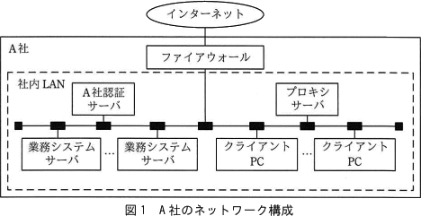
利用者は，業務システムを，社内LANに設置されたクライアントPCのWebブラウザから利用する。社外から社内LANへのリモートアクセスは禁止されている。業務システムの利用者認証は，A社認証サーバでの利用者IDとパスワード(以下，この二つを併せて利用者認証情報という)の検証によって行っており，シングルサインオンを実現している。
社内LANからインターネットを介した社外への通信は，クライアントPCからプロキシサーバを経由した，HTTP over TLS(以下，HTTPSという)による通信だけが，ファイアウォールによって許可されている。社外からインターネットを介した社内LANへの通信は，全てファイアウォールによって禁止されている。ファイアウォールの設定は，A社のセキュリティポリシに基づき変更しないものとする。
〔クラウドサービスの利用者認証〕
このたびA社は，業務システムの一つである販売管理システムを，B社がインターネットを介して提供する販売管理サービス(以下，B社クラウドサービスという)に移行することにした。利用者認証に関しては，A社認証サーバとB社クラウドサービスを連携し，次の(1)～(3)を実現することにした。
(1)～(3)を実現するために，A社は，利用者認証を仲介するIDプロバイダ(以下，IdPという)を社内LANに設置することにした。IdPは，認証結果，認証有効期限及び利用者ID(以下，これら三つを併せて認証済情報という)にディジタル署名を付加してから，Webブラウザを介して，B社クラウドサービスに送信する。B社クラウドサービスは，付加されているディジタル署名を使って，受信した認証済情報に[ b ]がないことを検証する。このために，IdPの[ c ]をB社クラウドサービスに登録しておく。 WebブラウザとB社クラウドサービスとの間，及びWebブラウザとIdPとの間の通信には，HTTPSを用いる。IdPとA社認証サーバとの間の通信にはLDAPを用いる。
〔B社クラウドサービスが利用可能になるまでの処理の手順〕
A社の利用者が，利用者認証されていない状態で，B社クラウドサービスを利用しようとした場合に，利用可能になるまでの処理の手順を次の①～⑩に示す。
B社クラウドサービスが利用可能になるまでの処理の流れを，図2に示す。図2中の①～⑩は，処理の手順の①～⑩と対応している。
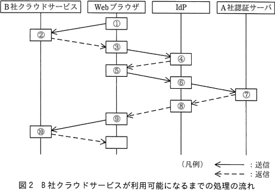
設問2
本文中の[ ]に入れる適切な答えを回答軍の中から選べa、b、c、に関する解答群
ア:PKI
イ:改ざん
ウ:公開鍵
エ:サービス妨害
オ:生体認証
カ:パスワード
キ:秘密鍵
ク:利用者ID
ケ:漏えい
ア:PKI
イ:改ざん
ウ:公開鍵
エ:サービス妨害
オ:生体認証
カ:パスワード
キ:秘密鍵
ク:利用者ID
ケ:漏えい
設問2
次の記述中の に入れる適切な答えを，解答群の中から選べ。
B社クラウドサービスでは，接続元のIPアドレスをA社のものに限定する機能は提供されていない。しかし，他の業務システムと同様に，B社クラウドサービスを，社内LANからの利用に限定できる。 この理由は，dことが必要であるが，IdPを社内LANに設置するので，社外からB社クラウドサービスを利用しようとしても，図2中のeの送信で失敗し，利用者認証されないからである。
d に関する解答群
ア:B社クラウドサービスが，IdPと直接通信する
イ:B社クラウドサービスが，利用者認証情報を検証し，Webブラウザに返信する
ウ:IdPが，利用者に代わって，利用者認証情報をB社クラウドサービスに送信する
エ:Webブラウザが，IdPと通信する
ア:B社クラウドサービスが，IdPと直接通信する
イ:B社クラウドサービスが，利用者認証情報を検証し，Webブラウザに返信する
ウ:IdPが，利用者に代わって，利用者認証情報をB社クラウドサービスに送信する
エ:Webブラウザが，IdPと通信する
d に関する解答群
ア:①
イ:③
ウ:⑤
エ:⑥
オ:⑩
ア:①
イ:③
ウ:⑤
エ:⑥
オ:⑩
データ構造とアルゴリズム
問8 データ構造及びアルゴリズムハフマン符号化を用いた文字列圧縮に関する次の記述を読んで，設問1～3に答えよ。
"A"～"D"の4種類の文字から成る文字列をハフマン符号化によって圧縮する。ハフマン符号化では，出現回数の多い文字には短いビット列を，出現回数の少ない文字には長いビット列を割り当てる。ハフマン符号化による文字列の圧縮手順は，次の(1)～(4)のとおりである。
文字列中の文字の出現回数を求め，出現回数表を作成する。例えば，文字列"AAAABBCDCDDACCAAAAA"(以下，文字列αという)中の文字の出現回数表は，表1のとおりになる。
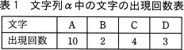
ハフマン木の定義は，次のとおりである。
節と枝で構成する二分木である。
親である節は，子である節を常に二つもち，子の節の値の和を値としてもつ。
子をもたない節(以下，葉という)は文字に対応し，出現回数を値としてもつ。
親をもたない節(以下，根という)は，文字列の文字数を値としてもつ。
文字列αに対応するハフマン木の例を，図1に示す。
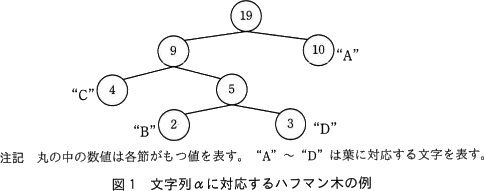
ハフマン木は，次の手順で配列によって実現する。
図2に示すとおり，根から矢印のようにたどると，文字列αの文字"B"のビット表現は010となる。
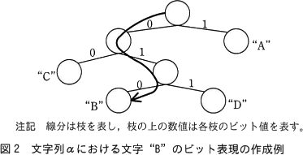
設問1
次の記述中の に入れる正しい答えを，解答群の中から選べ。 文字列"ABBBBBBBCCCDD"を，ハフマン符号化を用いて表現する。各文字とビット表現を示した表はaである。ハフマン符号化によって圧縮すると，文字"A"～"D"をそれぞれ2ビットの固定長で表現したときの当該文字列の総ビット長に対する圧縮率はbとなる。ここで，圧縮率は次式で計算した値の小数第3位を四捨五入して求める。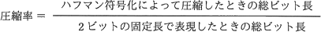
ア: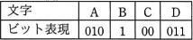
イ: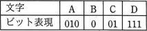
ウ: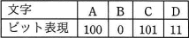
エ: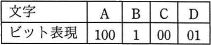
イ: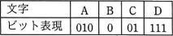
ウ: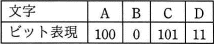
エ: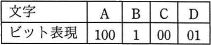
ア:0.77
イ:0.85
ウ:0.88
エ:0.92
イ:0.85
ウ:0.88
エ:0.92
設問2
ハフマン木を作成するプログラム1の説明及びプログラム1を読んで，プログラム1中の に入れる正しい答えを，解答群の中から選べ。〔プログラム1の説明〕
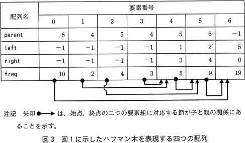
- 葉である節の個数 size
- 初期化された配列 parent
- 初期化された配列 left
- 初期化された配列 right
- 初期化された後，文字の出現回数が要素番号0から順に格納された配列 freq

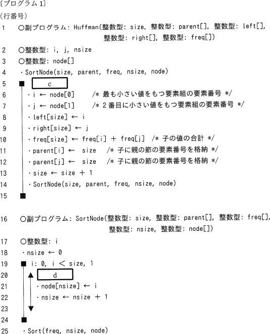
c，d に関する解答群
ア:nsize≧0
イ:nsize≧1
ウ:nsize≧2
エ:parent[i]＜0
オ:parent[i]＞0
カ:size≦nsize
キ:size≧nsize
ア:nsize≧0
イ:nsize≧1
ウ:nsize≧2
エ:parent[i]＜0
オ:parent[i]＞0
カ:size≦nsize
キ:size≧nsize
表計算
次の表計算のワークシート及びマクロの説明を読んで，設問1，2に答えよ。〔表計算の説明〕
小売販売のZ店では，会員として登録した顧客に会員カードを発行して販売促進活動に利用している。このたび，会員への2018年10月1日から2019年3月31日までの期間(以下，対象期間という)の販売データを基に，販売促進キャンペーンを実施することにした。
〔ワークシート:販売データ〕
ワークシート"販売データ"には，対象期間における会員への販売データが，販売日の昇順で格納されている。ワークシート"販売データ"の例を，図1に示す。
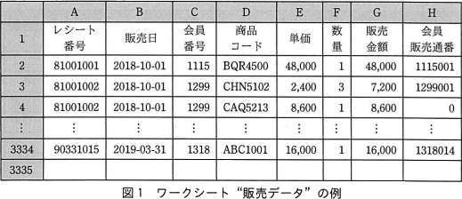
〔ワークシート:会員管理〕
ワークシート"会員管理"には，ワークシート"販売データ"のデータを基に，会員への販売状況や，販売促進キャンペーンのための情報を格納する。ワークシート"会員管理"の例を，図2に示す。
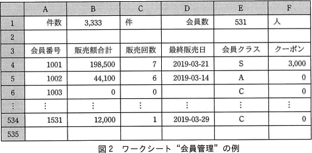
〔クラス分類のルール〕
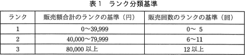
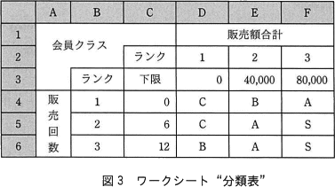
設問1
ワークシート"会員管理"に関する次の記述中の[ ]に入れる正しい答えを，解答群の中から選べ。
IF(論理和(A4＝null,C4＝0),null,[ a ])
IF(A4＝null,null,表引き(分類表!D$4:F$6,[ b ]))
IF(A4＝null,null,[ c ]))
a に関する解答群
ア:照合検索(A4,販売データ!C$2:C$9999,販売データ!A$2:A$9999)
イ:照合検索(A4,販売データ!C$2:C$9999,販売データ!B$2:B$9999)
ウ:照合検索(A4＊1000＋1,販売データ!H$2:H$9999,販売データ!A$2:A$9999)
エ:照合検索(A4＊1000＋1,販売データ!H$2:H$9999,販売データ!B$2:B$9999)
オ:照合検索(A4＊1000＋C4,販売データ!H$2:H$9999,販売データ!A$2:A$9999)
カ:照合検索(A4＊1000＋C4,販売データ!H$2:H$9999,販売データ!B$2:B$9999)
ア:照合検索(A4,販売データ!C$2:C$9999,販売データ!A$2:A$9999)
イ:照合検索(A4,販売データ!C$2:C$9999,販売データ!B$2:B$9999)
ウ:照合検索(A4＊1000＋1,販売データ!H$2:H$9999,販売データ!A$2:A$9999)
エ:照合検索(A4＊1000＋1,販売データ!H$2:H$9999,販売データ!B$2:B$9999)
オ:照合検索(A4＊1000＋C4,販売データ!H$2:H$9999,販売データ!A$2:A$9999)
カ:照合検索(A4＊1000＋C4,販売データ!H$2:H$9999,販売データ!B$2:B$9999)
b に関する解答群
ア:照合一致(B4,分類表!C$4:C$6,1),照合一致(C4,分類表!D$3:F$3,1)
イ:照合一致(B4,分類表!D$3:F$3,1),照合一致(C4,分類表!C$4:C$6,1)
ウ:照合一致(C4,分類表!C$4:C$6,1),照合一致(B4,分類表!D$3:F$3,1)
エ:照合一致(C4,分類表!D$3:F$3,1),照合一致(B4,分類表!C$4:C$6,1)
ア:照合一致(B4,分類表!C$4:C$6,1),照合一致(C4,分類表!D$3:F$3,1)
イ:照合一致(B4,分類表!D$3:F$3,1),照合一致(C4,分類表!C$4:C$6,1)
ウ:照合一致(C4,分類表!C$4:C$6,1),照合一致(B4,分類表!D$3:F$3,1)
エ:照合一致(C4,分類表!D$3:F$3,1),照合一致(B4,分類表!C$4:C$6,1)
c に関する解答群
ア:切捨て(B4,－4)／50000＊1000
イ:切捨て(B4＊1000,－8)／50000
ウ:切捨て(B4／50000,0)＊1000
エ:切捨て(B4／50000*1000,0)
オ:切捨て(B4／50000*1000,－4)
ア:切捨て(B4,－4)／50000＊1000
イ:切捨て(B4＊1000,－8)／50000
ウ:切捨て(B4／50000,0)＊1000
エ:切捨て(B4／50000*1000,0)
オ:切捨て(B4／50000*1000,－4)
設問2
新商品の見本の配布などの販売促進キャンペーンに活用するために，ワークシート"商品別管理"を作成し，マクロ manageMembers を格納した。マクロ manageMembers 中の に入れる正しい答えを，解答群の中から選べ。〔ワークシート:商品別管理〕
セル B1 に商品の商品コードを入力して，マクロ manageMembers を実行すると，ワークシート"販売データ"及びワークシート"会員管理"に格納されているデータを基に，列Aの行3以降に当該商品を購入した会員の会員番号を，列Bの行3以降に会員番号ごとの当該商品の販売金額の合計(以下，商品販売額という)を，列Cの行3以降に会員番号ごとに最後に当該商品を販売した日付(以下，商品最終販売日という)を，それぞれ表示する。各行は同一会員に関する項目で構成し，商品販売額の降順に，商品販売額が等しいときは商品最終販売日の昇順に整列して表示する。ここで，マクロの実行開始時には，セル A3～C9001 に空値が格納されている。ワークシート"商品別管理"の例を，図4に示す。
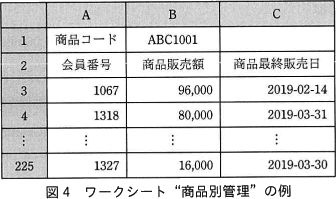
〔マクロ:manageMembersの説明〕 このマクロは，9,001行3列の要素をもつ2次元配列 sumTab を用意し，1以上会員数以下の全ての整数 i に対して，sumTab[i，0]に会員番号を格納し，その会員番号に対応する商品販売額をsumTab[i，1]に，商品最終販売日をsumTab[i，2]に格納する。
d に関する解答群
ア:sumTab[1,index] ← sumTab[1,index]＋相対(販売データ!A1,i,6)
イ:sumTab[1,index] ← sumTab[i,index]＋相対(販売データ!A1,index,6)
ウ:sumTab[i,1] ← sumTab[i,1]＋相対(販売データ!A1,i,6)
エ:sumTab[i,1] ← sumTab[i,1]＋相対(販売データ!A1,index,6)
オ:sumTab[index,1] ← sumTab[index,1]＋相対(販売データ!A1,i,6)
カ:sumTab[index,1] ← sumTab[index,1]＋相対(販売データ!A1,index,6)
ア:sumTab[1,index] ← sumTab[1,index]＋相対(販売データ!A1,i,6)
イ:sumTab[1,index] ← sumTab[i,index]＋相対(販売データ!A1,index,6)
ウ:sumTab[i,1] ← sumTab[i,1]＋相対(販売データ!A1,i,6)
エ:sumTab[i,1] ← sumTab[i,1]＋相対(販売データ!A1,index,6)
オ:sumTab[index,1] ← sumTab[index,1]＋相対(販売データ!A1,i,6)
カ:sumTab[index,1] ← sumTab[index,1]＋相対(販売データ!A1,index,6)
e に関する解答群
論理積(sumTab[j,1]＜sumTab[j＋1,1],論理和(sumTab[j,1]＝
sumTab[j＋1,1],sumTab[j,2]＞sumTab[j＋1,2]))
論理積(sumTab[j,1]＞sumTab[j＋1,1],
sumTab[j,2]＞sumTab[j＋1,2])
論理積(sumTab[j,1]＞sumTab[j＋1,1],論理和(sumTab[j,1]＝
sumTab[j＋1,1],sumTab[j,2]＜sumTab[j＋1,2]))
論理和(sumTab[j,1]＜sumTab[j＋1,1],
sumTab[j,2]＞sumTab[j＋1,2])
論理和(sumTab[j,1]＜sumTab[j＋1,1],論理積(sumTab[j,1]＝
sumTab[j＋1,1],sumTab[j,2]＞sumTab[j＋1,2]))
論理和(sumTab[j,1]＞sumTab[j＋1,1],論理積(sumTab[j,1]＝
sumTab[j＋1,1],sumTab[j,2]＜sumTab[j＋1,2]))
論理積(sumTab[j,1]＜sumTab[j＋1,1],論理和(sumTab[j,1]＝
sumTab[j＋1,1],sumTab[j,2]＞sumTab[j＋1,2]))
論理積(sumTab[j,1]＞sumTab[j＋1,1],
sumTab[j,2]＞sumTab[j＋1,2])
論理積(sumTab[j,1]＞sumTab[j＋1,1],論理和(sumTab[j,1]＝
sumTab[j＋1,1],sumTab[j,2]＜sumTab[j＋1,2]))
論理和(sumTab[j,1]＜sumTab[j＋1,1],
sumTab[j,2]＞sumTab[j＋1,2])
論理和(sumTab[j,1]＜sumTab[j＋1,1],論理積(sumTab[j,1]＝
sumTab[j＋1,1],sumTab[j,2]＞sumTab[j＋1,2]))
論理和(sumTab[j,1]＞sumTab[j＋1,1],論理積(sumTab[j,1]＝
sumTab[j＋1,1],sumTab[j,2]＜sumTab[j＋1,2]))
f に関する解答群
相対(A2，i，j) ← sumTab[i，1]
相対(A2，i，j) ← sumTab[i，j]
相対(A2，i，j＋1) ← sumTab[i，j]
相対(A2，j，i) ← sumTab[j，1]
相対(A2，j，i) ← sumTab[j，i]
相対(A2，j＋1，i) ← sumTab[j, 1]
相対(A2，i，j) ← sumTab[i，1]
相対(A2，i，j) ← sumTab[i，j]
相対(A2，i，j＋1) ← sumTab[i，j]
相対(A2，j，i) ← sumTab[j，1]
相対(A2，j，i) ← sumTab[j，i]
相対(A2，j＋1，i) ← sumTab[j, 1]